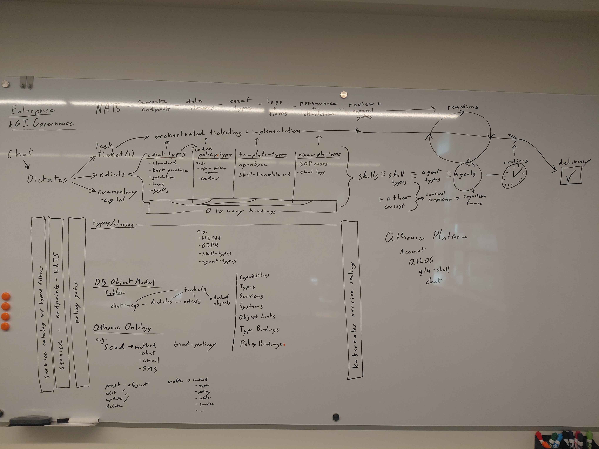

01
One mandate.
Two lifetimes.
The spike investigates and implements compliance. The edict keeps leadership reviewing the news after that work is delivered.
Replay the split ↗A Safe, Governable Reference Architecture for Enterprise AGI
Policy-governed service orchestration is all you need.

From the original drawing 13 September 2026Open the source +Language becomes commitments. Definitions compose execution.
Swipe the diagram to follow the system →
Tickets preserve work. Edicts preserve direction. Typed bindings connect reusable definitions to agents; governed services turn their actions into results.
Follow one mandate ↓Watch the factory. Select any component to inspect its role.
“Design and implement Compliance for the AI Kill Switch Act.”
“And moving forward, get the right leaders together monthly to review your AI Compliance News Report.”
Example source: H.R. 9917, introduced text ↗. The spike establishes current status, applicability and requirements; the title alone creates no compliance conclusion.
The compliance request becomes a spike ticket. Monthly leadership review becomes a standing edict.
The spike investigates and implements compliance. The edict keeps leadership reviewing the news after that work is delivered.
Replay the split ↗Bind policy, reusable patterns and relevant skills. Add current work and permitted sources. The resulting frame gives the agent its place and purpose.
Watch composition ↗A sourced report reaches the right leaders each month. Decisions create owned follow-up work. That work informs the next review.
Follow the continuing loop ↗Anderson’s reference monitor mediates protected access. Its implementation must resist tampering, be invoked for every protected reference and permit thorough analysis. [1] Saltzer and Schroeder sharpen the obligation: explicit permission, complete mediation and least privilege. [2]
The Reactor applies this boundary to service calls. An agent proposes; the owning service admits or refuses. Policy, trusted facts and enforcement must all hold. Changes to those controls require their own authority.
“Safe” names the safeguards in this reference design. Their effectiveness depends on qualified implementations, adequate policies and declared host assumptions. The animation demonstrates the intended mechanism; it does not certify a deployment.
PanSigna.org—“all signals”—is proposed as a public consortium for encoding a public intermediate-representation ontology, with an index and wiki.
Public identifiers, types and relations make service contracts and policy profiles inspectable across implementations. W3C OWL 2 provides an established semantic foundation. [3]
Internet Society stewardship is a proposed mandate requiring an agreed charter. [4] Public definitions do not grant control over private deployments. Institutions adopt profiles; operators remain accountable for enforcement.
Objects, links and messages carry the meaning. Typed service calls do the work.
A ticket has zero or one assigned agent. Attempts can change; at most one is current. The resource owner still handles concurrent updates.
Owned records → permitted views → composed frames → attributed evidence. Types and bindings connect them. Retrieved instructions never widen authority.
An operation keeps its identity across crashes. A lost reply may leave UNKNOWN. An authorized reconciler owns the gap; blind replay stops.
“Design and implement Compliance for the AI Kill Switch Act.” becomes a spike ticket. Monthly leadership review becomes a standing edict.
The spike resolves the bill text, status and applicability. Policy, control templates and assurance examples bind to the task; the edict defines the continuing review.
The compositor assembles the brief, verified sources, relevant skills and pending work. Legal, security, engineering and the accountable AI owner are proposed review roles.
The agent drafts service code, tests and requirement mappings. News feeds a sourced AI Compliance News Report; findings can create linked follow-up tickets.
The illustration admits a reviewed candidate only within its policy and release scope. A denied caller cannot cross the same boundary. Actual compliance needs qualified controls and evidence.
A governed release can deliver the control. The edict continues as a monthly review of the AI Compliance News Report, with an owner, the right leaders and linked decisions.
| Role | Reference | Contract |
|---|---|---|
| Communication | NATS / JetStream | Calls and durable notifications; neither grants assignment. |
| Owned state | PostgreSQL + control service | Transactional records, custody, revisions and outbox. |
| Authorization | Cedar + service enforcement | Proposed integration: validate schemas and refuse evaluation errors. |
| Execution | Compositor, workers, adapters, supervisor | Bound context, egress, resources and independent stop control. |
| Evolution | Governed release controller | Isolated candidate → observed canary → staged traffic; retain a checked hot fallback. |
These are reference choices and contracts, not a qualified deployment. The existing RFC-001 exercises one local HTTP/SQLite crash-and-restore case. Its guarded trace records one effect and zero duplicates; the broken control duplicates the effect. It does not exercise this compliance scenario.
A deployment must qualify containment, concurrent admission, policy adequacy and recovery on its actual stack. Restore begins with new effect admission held until stale execution, unresolved effects and newer authority changes are reconciled.
The design assumes trustworthy administrative roots and correctly enforced isolation. It addresses bounded operational hazards; it establishes neither general alignment nor protection from compromised root authority. Institutional participation and the compliance implementation shown are proposals.
Smithright, Ryan. AGI Reactor — A Safe, Governable Reference Architecture for Enterprise AGI. AEGISES, draft 2.0, 14 September 2026. Version permalink · BibTeX · CSL-JSON.
Animation source: TypeScript · CSS · Archived previous edition.
Root Stewardship, International Security, & Standards Foundations
Computer Science, Computational Linguistics, Compute Primitives, Encodings, Compiler Engineering, Ontology Engineering, Type Theory, Calculus, Data Science, Information Theory, Language Models, Public Benchmarks, Microkernels, OS Engineering, Network Engineering, Network Protocols, Encryption, IPC, IO, API Engineering, Control Theory, Data Engineering, Model Routing, Enterprise Software Architecture, Middleware Architecture, Internet Exchange Architecture, Computational Neuroscience, Cognitive Science, Artificial Life, Ethics, Philosophy
Ethical Rigor, Moral Courage, Inspiration
Giants and Legends ALL!
Giants and legends ALL!
OS Force, Inspiration, Rigor
Kernel Force, Git Force, Foundations
Stewardship, Foundations
AGI Foundations, Inspiration
Foundations, Kubernetes Force, Thought Leadership, Standards Force, Equanimity
Moral Courage, Thought Leadership, & Code Force
Code Force, Thought Leadership, Moral Courage
Inspiration, MLIR Force, Foundations
Computational Linguistics Thought Leadership
Inspiration, Systems Architecture Force, FPGA Force!
Inspiration, Reference Monitor Foundations
Language Game Theory
Characteristica Universalis, Calculus, Inspiration
Mac Force, Design Inspiration, Posthumous Review
Foundations, News & Research Force, Veracity Balancing
Compute Force, Foundations
Inspiration, Foundations
Open Source Foundations, Thought Leadership
Inspiration, Foundations
Moral Courage, Security Foundations
Invaluable!
Moral Courage, Foundations, Support
Potestas, Persistence, & Flame, Adversarial Agency
Support & Friendship
Mentorship, Inspiration
Accenture, MuleSoft, SalesForce, Purdue University, Springboard
Alan Turing, Bell Labs, Microsoft, Oracle, IBM, Meta, Huggingface, OpenHands, Adobe, McKinsey
Isaac Aasimov, Ray Kurzweil, The Wachowskis, James Cameron, The Primeagen, Cormac McCarthy, Jorge Luis Borges
Inspiration, Sportsmanship, Moral Courage, Diplomacy
Foundations, Tubes, Silicon Valley
Foundations, Make Force
Foundations, Legislation Force
Inspiration, Partnership, Mythos
Beast Force, Inspiration
and so many more giants and trim tabs...